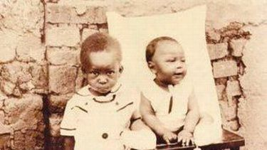
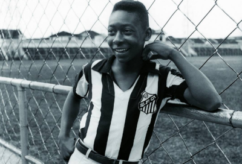
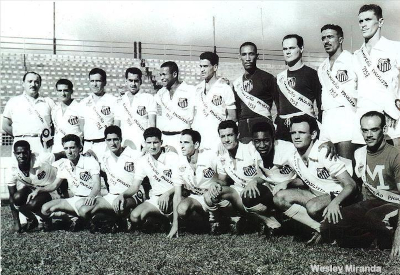
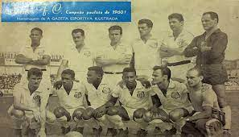

Pelé
Edson Arantes do Nascimento Três Corações, 23 de outubro de 1940 – São Paulo, 29 de dezembro de 2022), mais conhecido como Pelé, foi um futebolista brasileiro que atuou como atacante. Descrito como o "Rei do Futebol", é amplamente considerado como o maior atleta de todos os tempos. Em 2000, foi eleito Jogador do Século pela Federação Internacional de História e Estatísticas do Futebol (IFFHS) e foi um dos dois vencedores conjuntos do prêmio Melhor Jogador do Século da FIFA. Nesse mesmo ano, Pelé foi eleito Atleta do Século pelo Comitê Olímpico Internacional. De acordo com a IFFHS, é o segundo maior goleador da história do futebol em jogos oficiais, tendo marcado 765 gols em 812 partidas. No total foram 1283 gols em 1363 jogos (incluindo amistosos não-oficiais), um recorde mundial do Guinness. Durante sua carreira, chegou a ser durante um período o atleta mais bem pago do mundo.
Pelé começou a jogar pelo Santos Futebol Clube aos quinze anos de idade, e pela Seleção Brasileira aos dezesseis. Durante sua carreira na Amarelinha, sagrou-se campeão de três edições da Copa do Mundo FIFA: 1958, 1962 e 1970, sendo o único a fazê-lo como jogador. Contando os gols oficiais, Pelé é, ao lado de Neymar, o maior goleador da história da Seleção Brasileira, com 77 gols em 92 jogos. Em clubes, ele é o maior artilheiro da história do Santos e os levou a várias conquistas, com destaque para duas Copas Libertadores da América e dois Mundiais Interclubes, vencidos em 1962 e 1963. Conhecido por conectar a frase "jogo bonito" ao futebol, a "ação eletrizante e a propensão a objetivos espetaculares" de Pelé fizeram dele uma estrela rapidamente, e sua equipe fez turnês internacionais, a fim de aproveitar ao máximo sua popularidade. Após se aposentar em 1977, tornou-se embaixador mundial do futebol e fez muitos trabalhos de atuação e comerciais. Em janeiro de 1995, foi nomeado ministro do esporte no governo Fernando Henrique Cardoso. Em 2010, foi nomeado presidente honorário do New York Cosmos.
Com média de quase um gol por partida ao longo de sua carreira, Pelé era especialista em chutar a bola com qualquer um dos pés, além de antecipar os movimentos de seus oponentes em campo. Embora atuasse predominantemente como atacante, ele podia recuar e assumir um papel de playmaker, fornecendo assistências com sua visão e habilidade de passe. Considerado um jogador completo, também tinha como característica a qualidade no drible para passar pelos adversários. No Brasil, Pelé é aclamado como herói nacional por suas realizações no futebol e por seu apoio franco a políticas que melhoram as condições sociais dos pobres. Ao longo de sua carreira e aposentadoria, recebeu vários prêmios individuais e de equipe por seu desempenho em campo, suas conquistas recordes e seu legado no esporte.
Primeiros anos
Edson Arantes do Nascimento nasceu em 23 de outubro de 1940 em Três Corações, Minas Gerais, Brasil, sendo filho do jogador João Ramos do Nascimento, mais conhecido como Dondinho, e Celeste Arantes. É o mais velho de dois irmãos. Pelé recebeu seu primeiro nome em homenagem ao inventor estadunidense Thomas Edison, de quem Dondinho era fã. Seus pais decidiram remover o "i" e chamaram-no de "Edson", mas houve um erro na certidão de nascimento, levando muitos documentos a mostrar seu nome como "Edison", não "Edson", como é chamado. Ele foi originalmente alcunhado de "Dico" por sua família. Edson recebeu o apelido "Pelé" durante seu tempo de escola por conta da forma que pronunciava o nome de seu jogador favorito, o goleiro Bilé do Vasco da Gama de São Lourenço, time inspirado no homônimo carioca, o qual falava de forma equivocada. Pelé não gostava do apelido, e chegou a brigar com o colega de sala que inicialmente lhe atribuíra a alcunha. Em sua autobiografia, Pelé afirmou que não tinha ideia do que o nome significava, nem seus velhos amigos. Além da afirmação de que o nome é derivado de Bilé, e que significa "milagre" em hebreu (פֶּ֫לֶא), a palavra não tem nenhum significado em português.
Aos 3 anos Pelé muda-se com sua família para o estado de São Paulo, onde viveria quase toda sua vida em diferentes cidades. A primeira delas, Bauru, onde viviam na pobreza e Pelé ganhava algum dinheiro extra trabalhando em lojas de chá. Ensinado a jogar futebol pelo seu pai, não tinha dinheiro para comprar uma bola de futebol adequada, e geralmente jogava com uma meia recheada com jornal e amarrada com uma corda ou ainda jogava com uma toranja. A primeira equipe de Pelé foi o Sete de Setembro, equipe que jogava na terra batida, batizada em referência à rua que fazia esquina com a casa de Pelé. Do Sete de Setembro Pelé foi para o Ameriquinha, onde calçou chuteiras pela primeira vez, e foi campeão do Torneio Início local. Com 13 anos, Pelé começou a jogar pelo "Baquinho", equipe infantojuvenil do Bauru Atlético Clube, que conquistou dois campeonatos infantojuvenis. Pelé era o caçula da equipe. O time do Bauru apresentava uma grande superioridade sobre seus adversários: num dos jogos, chegou a ganhar de 21–0, com Pelé sendo um dos artilheiros, com sete gols. No primeiro ano de atuação, a equipe foi campeã com seis rodadas de antecipação. Pelé já chamava a atenção na época, com muitos espectadores vindo aos jogos para assistir o garoto. O "Baquinho" foi convidado em 1954 a se apresentar na preliminar de um jogo da segunda divisão do Campeonato Paulista, enfrentando o campeão infantojuvenil de São Paulo. O time de Bauru venceu a partida por 12–1, com cinco gols de Pelé, que foi destaque em jornal local da cidade.
A equipe do "Baquinho" se desfez em 1955, e os garotos resolveram criar uma nova equipe, dessa vez para jogar futebol de salão. Deram o nome à equipe de "Radium", em referência ao Radium Futebol Clube, da cidade de Mococa. O futebol de salão tinha acabado de se tornar popular em Bauru quando Pelé começou a jogar. Ele fez parte da primeira competição de futsal na região. Pelé e sua equipe ganharam o primeiro campeonato e vários outros. Pelé se destacou nesses campeonatos; a superioridade técnica do garoto sobre os demais era tamanha que a Liga de Futebol Amador determinou que Pelé só poderia atuar no gol ou na zaga. Se passasse do meio-campo com a bola, seria falta para o adversário. De acordo com Pelé, o futsal apresentou desafios difíceis; ele disse que era muito mais rápido do que o futebol na grama e que os jogadores eram obrigados a pensar mais rápido, uma vez que todo mundo está perto de todo mundo em campo. Pelé creditou o futebol de salão por ajudá-lo a pensar melhor e mais rápido. Além disso, o futebol de salão permitiu-lhe jogar com adultos quando tinha cerca de 14 anos de idade. Em um dos torneios em que participou, foi inicialmente considerado muito jovem para jogar, mas enfim se tornou o artilheiro da competição com quatorze ou quinze gols; "isso me deu muita confiança", afirmou posteriormente.
Em 1956, Pelé recebeu uma proposta do Bangu Atlético Clube, que foi recusada por Celeste, mãe de Pelé, que não queria que ele fosse "para uma cidade grande", em suas próprias palavras. Pelé também foi convidado a jogar no Esporte Clube Noroeste, de Bauru. Waldemar de Brito, seu técnico no Bauru Atlético Clube, se opôs a ideia, com receio que Pelé se lesionasse jogando pelo Noroeste. Brito sugeriu então a ida ao Santos Futebol Clube. A mãe de Pelé inicialmente era contra a ideia, já que não desejava que Pelé se tornasse um jogador de futebol; ela acabou sendo convencida, e Pelé foi com Brito para a cidade de Santos.
Carreira em clubes
Santos
Em 1956, Brito levou Pelé para a cidade de Santos para experimentar jogar para o time profissional Santos Futebol Clube, dizendo à administração do Santos que o jovem de quinze anos seria "o maior jogador de futebol do mundo". Pelé impressionou o treinador do Santos, Luís Alonso Pérez (Lula) no Estádio Urbano Caldeira, e assinou um contrato profissional com o clube em junho de 1956. Pelo contrato, Pelé recebia um salário de seis mil cruzeiros, valor que enviava para sua mãe. Pelé inicialmente atuou na equipe amadora do Santos, marcando 13 gols em 13 jogos. Ele fez a sua estreia profissional em 7 de setembro de 1956, com quinze anos, contra o Corinthians de Santo André e teve um bom desempenho em uma vitória de 7–1, marcando o primeiro gol de sua carreira profissional durante a partida. Zaluar, goleiro do Corinthians, mandou fazer um cartão de apresentação após se aposentar e começar a trabalhar como corretor, no qual se identificava como "goleiro do primeiro gol de Pelé".
Pelé iniciou a temporada de 1957 na reserva, por ser considerado ainda muito jovem, e por ter como concorrente na posição Emmanuele Del Vecchio, principal referência no ataque santista. Mesmo atuando na reserva, Pelé chamou a atenção de dirigentes gaúchos no início do ano, quando o Santos visitou o Rio Grande do Sul. O Brasil de Pelotas tentou trocar seu atacante Joaquinzinho por Pelé, o que foi negado pelo treinador santista. Já o Grêmio chegou a consultar o Santos sobre a possibilidade de empréstimo de Pelé.
Pelé começou a se destacar nacionalmente no Torneio Rio-São Paulo de 1957. Neste, foi o artilheiro da equipe, junto com Dorval, não obstante ter entrado como reserva em mais da metade das partidas disputadas. No início de junho, Pelé contava com 30 jogos e 18 gols, entre partidas amistosas e oficiais. Nesse mês, o Santos formou com o Vasco da Gama um combinado para disputar o Torneio Internacional do Morumbi, organizado pelo São Paulo para ajudar na construção do seu estádio. Como os jogos do combinado seriam no Maracanã, optou-se por se utilizar a camisa vascaína. Na primeira partida, contra o português Belenenses, Pelé marca três gols na goleada por 6–1. Pelé ainda marcaria um gol na partida seguinte, contra o Flamengo, e outro gol na última partida do combinado, contra o São Paulo, totalizando cinco gols em três partidas. As atuações do jogador foram elogiadas pela imprensa, que vaticinava o "nascimento do futuro craque da Seleção", e chamaram a atenção do treinador da Seleção Brasileira, Sylvio Pirillo. Um mês depois de finalizado o torneio, Pelé foi convocado pela primeira vez para a Seleção, tendo apenas dez meses de carreira. As atuações do jogador também chamaram atenção do Vasco, que tentou sem sucesso contratá-lo por duas vezes naquele ano.
Curiosamente, Pelé por diversas vezes já se declarou vascaíno. Em 1967, quando ainda atuava pelo Santos, afirmou que o Vasco era seu time de coração, em entrevista para o Museu da Imagem e do Som. Em entrevista em 1977, declarou que "o time do meu coração sempre foi o Vasco". Em 2020, ao ser questionado se era vascaíno, Pelé afirmou: "Fui não, sou Vasco ainda". Em 2021, Pelé foi agraciado com o título de sócio honorário do Vasco.
Com a convocação a Seleção e a venda de Del Vecchio ao Verona, Pelé consolidou sua posição como titular no ataque santista, assumindo a camisa de número 10. Alçado a posição de titular, Pelé se sagrou artilheiro do Campeonato Paulista de 1957, com 17 gols — a primeira artilharia de um total onze na competição, recorde até hoje não batido. Pelé seria o artilheiro do Santos no ano, com 57 gols marcados.
Em 1958, o primeiro torneio oficial disputado pelo Santos foi o Torneio Rio-São Paulo de 1958, no qual a equipe ficou apenas na 7.ª posição. Pelé foi o artilheiro da equipe, junto com Pepe, com oito gols. Nesse torneio, Pelé teve atuação destacada em partida contra o América, o que lhe rendeu a alcunha de "Rei", que levaria para o resto da carreira. O confronto foi vencido pelo Santos por 5–3, com quatro gols marcados por Pelé. A atuação do jogador impressionou o jornalista e dramaturgo Nelson Rodrigues, que se encontrava no Maracanã assistindo ao jogo. Rodrigues escreveu uma crônica em homenagem a Pelé, chamada "A realeza de Pelé". Nela, o dramaturgo escreveu que "Pelé leva sobre os demais jogadores uma vantagem considerável — a de se sentir rei, da cabeça aos pés". Se referindo ainda ao complexo de vira-lata e a Copa do Mundo FIFA de 1958, que viria a se realizar nos meses seguintes na Suécia, Nelson Rodrigues afirma: "Com Pelé no time, e outros como ele, ninguém irá para a Suécia com a alma dos vira-latas. Os outros é que tremerão diante de nós".
Nesse ano Pelé conquistaria seu primeiro grande título com o Santos, com a conquista do Campeonato Paulista. Pelé iria terminar o torneio como artilheiro da competição com 58 gols, um recorde que permanece até hoje. Ele calcula que tenha jogado mais de cem partidas naquele ano, entre Santos, Seleção Brasileira e o time do Exército. Pelé marcou 80 gols em 1958, chegando ao seu 100.º gol durante o Campeonato Paulista. Suas atuações nesse ano lhe renderam o interesse da italiana Inter de Milão, que tentou contratá-lo; o negócio acabou não avançando em razão da revolta dos torcedores com a possível saída do jogador.
No ano seguinte, o Santos fez uma grande excursão pela América, visitando 7 diferentes países da América do Sul, Central e do Norte. Foram 14 partidas disputas por Pelé, com 15 gols. Na primeira partida da excursão, contra o peruano Sport Boys, Pelé marcou seu primeiro gol fora do Brasil com a camisa santista — ele marcaria ainda outro gol na vitória por 3–0. Em toda a sua carreira pelo Santos, Pelé marcaria 361 gols no estrangeiro, com média superior a um gol por jogo. Após voltar ao Brasil e disputar alguns amistosos, a equipe faturou o Torneio Rio-São Paulo com um triunfo por 3–0 sobre o Vasco da Gama. Pelé foi o vice-artilheiro do Santos na competição, com 6 gols em 7 jogos.
Terminado o torneio, o Santos partiu para outra excursão, dessa vez para a Europa. A excursão passou por 9 países, com 22 jogos num intervalo de 44 dias; uma média de uma partida a cada dois dias. Pelé foi um grande destaque na excursão, sendo o artilheiro santista, com 28 gols em 22 jogos. Dentre suas atuações, destacam-se seu gol na derrota de 3–2 contra a Inter de Milão, no qual driblou quatro adversários antes de finalizar, e as goleadas de 7–1 sobre a mesma Inter, com quatro gols de Pelé, e 5–1 contra o Barcelona, com dois gols de Pelé. Na goleada sobre a Inter, Pelé foi aplaudido de pé pela torcida adversária. Suas atuações despertaram o interesse da Inter, que chegou a sondar o Santos, que recusou o negócio. Durante a viagem, Pelé marcou seu gol 200.º, na vitória de 6–0 sobre o Hamburgo. O jogo mais aguardado da excursão era contra o Real Madrid, tetracampeão europeu e com uma equipe considerada uma das melhores de todos os tempos. A partida terminou com vitória madrilenha por 5–3. Pelé marcou o primeiro gol da partida, e foi elogiado pelo treinador do Real Madrid, Luis Carniglia. O então presidente do clube merengue, Santiago Bernabéu, visitou Pelé após a partida, e cogitou sua contratação, mas acabou desistindo por considerá-lo jovem demais. Segundo parte da imprensa europeia, o Real Madrid tentaria contratar Pelé ainda no final daquele ano, para substituir Raymond Kopa. A venda nunca se concretizou; o dirigente merengue Raimundo Saporta afirmou anos depois que Real Madrid e Santos chegaram a firmar cláusula de venda, que nunca foi acionada.
Após voltar da Europa, o Santos disputou o Campeonato Paulista. O ataque santista marcou 155 gols nesse campeonato, recorde que se mantém até hoje, com Pelé marcando 46 gols e conquistando a artilharia pela terceira vez seguida. Santos e Palmeiras terminaram o campeonato empatados, e foi decidido que o critério de desempate seria a realização de três partidas entre eles. Após dois empates, a vitória palmeirense no último jogo selou o campeonato do Palmeiras, ficando o Santos com o vice-campeonato. Durante o Campeonato Paulista, Pelé marcou o gol que considera como o mais memorável de sua carreira, no Estádio Conde Rodolfo Crespi, em partida contra o Clube Atlético Juventus, em 2 de agosto. No lance, ao receber um lançamento de um companheiro, Pelé aplicou, de costas, uma meia lua em seu marcador, sem deixar a bola tocar no chão, e na sequência chapelou três adversários, incluindo o goleiro, concluindo o lance sem deixar a bola cair. Como não há imagens de vídeo do jogo, Pelé pediu que uma animação de computador fosse feita com esta finalidade específica. Cinco décadas depois, uma placa foi colocada no estádio em homenagem ao lance. Durante o torneio, Pelé também atuou como goleiro, na vitória de 4–2 sobre o Comercial Futebol Clube. Aos 19 minutos do segundo tempo, o goleiro Lalá se lesionou, sendo substituído por Pelé. Segundo o jornal Folha de São Paulo, Pelé — que não foi vazado enquanto atuando como goleiro — efetuou "cinco defesas que podem ser consideradas difíceis, principalmente para quem não é goleiro". O jogador tinha o costume de jogar como arqueiro nos "rachões" da equipe, tendo atuado mais três vezes ao longo da carreira como goleiro — não sofrendo gols em nenhuma delas.
No final do ano, o Santos iniciou a disputa da Taça Brasil de 1959. Por ser o atual campeão paulista, a equipe entrava na disputa já nas semifinais da competição. O clube santista eliminou o Grêmio nas semifinais, enfrentando o Bahia na final, em uma melhor de três. Na primeira partida, disputada na Vila Belmiro, vitória do Bahia, por 3–2. Pelé marcou um dos gols do Santos. O Santos venceu a segunda partida, na Fonte Nova, por 2–0, novamente com um gol de Pelé. Pelé se lesionou antes da derradeira e última partida, após torcer o pé durante o treino. Pai Santana, na época massagista do Bahia, famoso por seus "trabalhos espirituais" que supostamente favoreciam sua equipe e prejudicavam os adversários, afirma ter feito um "trabalho" para retirar Pelé do jogo final. Questionado se não tinha remorso de supostamente ter feito Pelé torcer o pé, Pai Santana afirmou: "Não. Ele chateava muito a gente. Ele ganhava tudo! Então tinha que torcer [o pé] mesmo". O Bahia venceu o Santos por 3–1, no Maracanã, e sagrou-se campeão brasileiro de 1959.
Em 1960, o Santos voltou a excursionar na Europa, disputando 18 jogos em sete países. Pelé foi o artilheiro santista na excursão, com 24 gols. Durante a excursão, o Santos venceu o Troféu Gialorosso, ao bater a equipe da Roma por 3–2, com um gol de Pelé, e o Torneio de Paris, derrotando o Stade de Reims e o Racing Club de France. Pelé marcou em ambos os jogos, destacando-se seu gol na partida contra o Stade de Reims, no qual driblou cinco adversários antes de tocar na saída do goleiro adversário. Terminada a excursão, o Santos voltou ao Brasil para disputar o Campeonato Paulista de Futebol, o qual viria a conquistar. Pelé marcou 34 gols na campanha, se sagrando o artilheiro do torneio. Pelé também foi o artilheiro do Santos no ano, com 61 gols.
